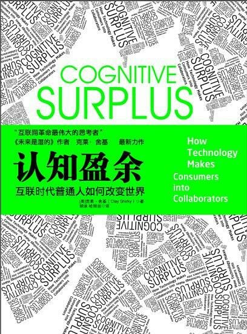

注：【】部分为笔者心得，非原文摘抄。
- 花过多时间来看电视和不断增长的物质欲以及焦虑感存在着联系。
- 人类是社会性动物，但自由时间的激增和某种社会资产的稳步减少趋于一致，这种社会资产便是人与人之间的信任与依靠。
- 任何人类活动，无论看上去多么不可能，在人群中发生的可能性都会增加。
- 【能迅速掌握科技进步的人，才可能更快更好地适应社会变化，从而过得“安稳”。】
- 人类对彼此联系有着内在的看重。
- 普通群众的沉默都是装出来的。
- 多年来人类少有动机上的变化，但是机会总是随着社会环境或多或少发生着变化。在机会变化小的世界里，行为的变化也就很小，但当机会有了大的变动，行为也会随之变化，只要这个机会诉诸了人类的真实动机。
- 并不是工具塑造了我们的行为，但是工具赋予了我们行为发生的可能。
- 人类的动机并不纯粹是附加性的，为了兴趣而做事和为了报酬而做事是截然不同的。
- 内在动机能让行为本身就成为一种回报；而对外在动机来说，回报来自与行为之外，而不在于行为本身。
- 设计水平并不是衡量一个网站的唯一标尺。
- 想要分享的动机才是驱动力，而技术仅仅是一种方法。
- 技能只在有的情况下可以被用来区分“业余爱好者”和“专业人士”，然而动机却总能对两者加以区分。
- 行为源自内在动机的人们——业余爱好者，在相对私密的环境中活动，而源自外在动机的人们则在更公共的场合中活动。
- 社会化媒体把发现成本降到低点。
- 技巧的推广得益于激烈的竞争。
- 在一个社会中，人类道德标准的最大保障之一就是惩罚的意愿，即是否愿意去惩罚偏离公平准则、偏离道德规范的行为，即使这种惩罚会让自己付出一定的代价。
- 利他惩罚：个人承担成本却给社会带来利益的行为。
- 当人们对公平的在乎程度超过金钱时，普通人内在的关于如何对待他人的情感便会轻易被触发并且难以压制。
- 实验表明，人，尤其是年轻人，对激励会做出反应，因为他们能尝试中得到很多，又没有什么可失去的。
- 威慑是影响人们行为的一种简单可靠的方式。
- 将动机标价会减少人们做事的动机。
- 将非市场交易行为标价以后，人们会减少把对方当做可以保持长期关系的人来对待的意愿。
- 有些价值是市场创造不出来的，这些价值的创造只能靠一系列分享和相互协调性的假设，也就是靠文化。
- 知识是人类所拥有的最具兼容性的东西，但是要想利用它，就需要具备一些特殊条件：社区规模的大小、共享知识的成本、被共享知识的明晰性，以及接收者们的文化规范。
- 参与者的规范是预测未来成功与否的关键，而这些规范在一定程度上是基于群体成员是如何理解彼此之间关系的。
- 当越来越多的人开始期待业余参与成为一种开放的选择时，期待就会改变文化。
- 个人想象力的提升总是与信念上的飞跃相伴而生。
- 抛弃旧有限制并不会引领我们进入一个没有限制的世界。无论是过去、现在还是将来的世界都有其限制，抛弃旧的限制仅仅是为了给制定新限制清理出空间。
- 一个追求共同目标的群体必须保证自己的高效率，同时还必须保证其成员具有满足感。
- 完全的个人自由和完全的社会控制都不是最优选择，管理个人自由和社会价值之间的矛盾成为我们的责任。
- 没有一个完全的解决方案，只有用不同的优化方法来创造不同的价值，并管理不同类型的问题。
- 新工具所提供的机会越多，任何人可以从之前社会形态推断未来的可能性也就越小。
- 【创新实践的关键在于对现状的强烈不满、对新方式大胆的想象以及对试错成本的精细控制。】
- 要从一个工具中创造出最大的价值，考的并不是总体规划或者跨越式发展，而是连续不断的尝试和错误。
- 为了拥有一个大型而优秀的系统，最好从一个小型而优秀的系统做起，并且努力使它变大变强，这样做远远好过从一个大型却平淡无奇的系统做起并努力改进。
- 你想要用户在多大程度上按照某种特定方式行动并不重要，重要的是他们对于你提供的机会做出何种反应。
- 团体成功的关键是最初吸纳的十几名用户能够体现正确的文化规范，但是有一点是值得注意的：对于什么是正确的文化规范的理解，不同团体间存在着差异性。
- 一项新的沟通技术的出现和旧有制约的终止会改变我们的结缔组织，所以重大的新机遇总是会造成对社会的重构。
- 最重要的协商不是激进者和传统者之间的协商，而是关乎社会中的市民，在全新的可能性之下，他们是唯一能够合理决定自己想过什么样生活的人群。
- 以你为对象的媒体如果没有将你包含进去，那么就不值得在它面前待太久。